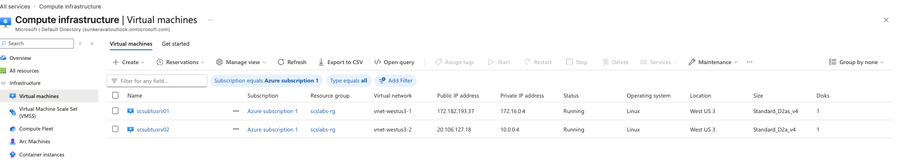
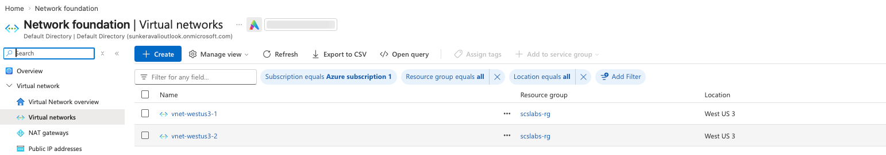
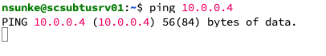
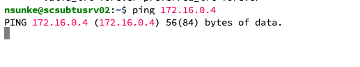
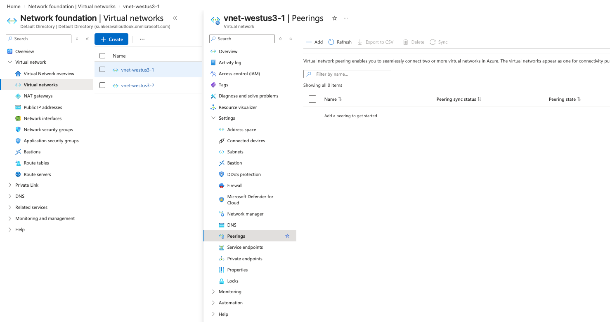
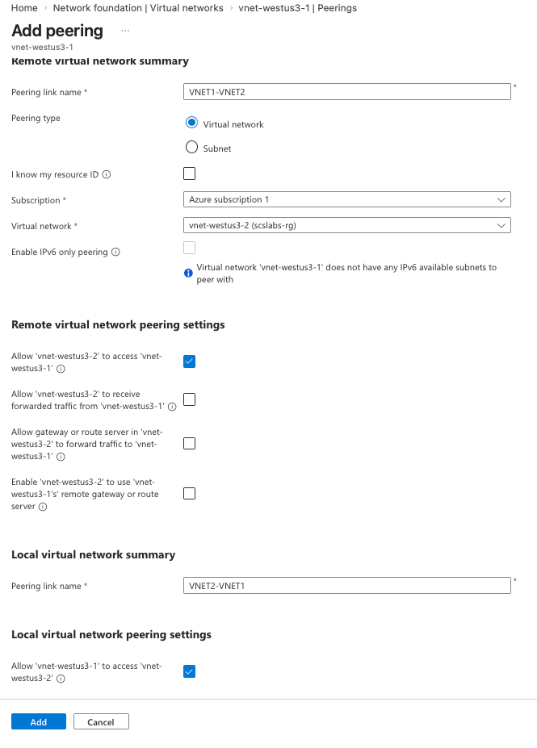
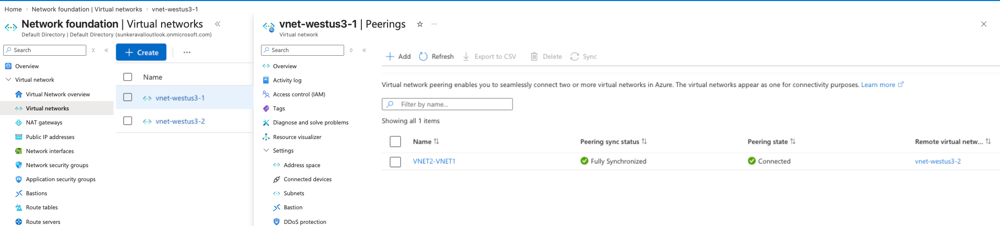
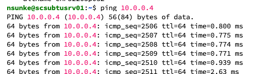
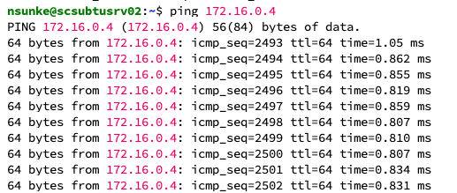

1. What VNet peering is
An Azure virtual network (VNet) is an isolated private network. Resources inside one VNet can talk to each other, but two different VNets have no route between them, even when they sit in the same subscription and the same region.
VNet peering joins two VNets so that they behave like one network for connectivity. Traffic between peered VNets:
- uses private IP addresses only, so no public IP is needed for the two sides to communicate;
- travels on the Microsoft backbone network, not the public internet;
- needs no VPN gateway, so there is no gateway bottleneck and nothing to wait 30 minutes for.
There are two types. Regional peering connects VNets in the same region, which is what this lab uses. Global peering connects VNets in different regions.
2. Lab setup
Everything is in one subscription, one resource group (scslabs-rg) and one region (West US 3).
| VM | Virtual network | Private IP | OS |
|---|---|---|---|
scsubtusrv01 | vnet-westus3-1 | 172.16.0.4 | Linux (Ubuntu) |
scsubtusrv02 | vnet-westus3-2 | 10.0.0.4 | Linux (Ubuntu) |


3. Test before peering
First, confirm the problem. From each VM, ping the private IP of the other one.

scsubtusrv01 to 10.0.0.4: the ping hangs with no reply.
scsubtusrv02 to 172.16.0.4: the same result.Neither VM gets a response. Each VNet has no route to the other's address space, so the packets have nowhere to go.
4. Create the peering
Step 1Open the Peerings blade
In the portal, go to Virtual networks, select vnet-westus3-1, then choose Settings → Peerings. The list is empty.

vnet-westus3-1. Click Add.Step 2Fill in the Add peering form
The form has a section for the remote VNet and a section for the local VNet. One submit creates the peering link in both directions.

vnet-westus3-1.| Field | Value used | What it does |
|---|---|---|
| Peering type | Virtual network | Peers the whole VNet. The Subnet option limits the peering to chosen subnets. |
| Virtual network (remote) | vnet-westus3-2 | The VNet on the other side. |
| Allow access (remote and local) | Ticked on both | Lets VMs in each VNet reach the other VNet. This is the setting that matters for this lab. |
| Receive forwarded traffic | Unticked | Only needed when traffic passes through a network virtual appliance, as in hub-and-spoke designs. |
| Gateway or route server options | Unticked | Only needed for gateway transit, where one VNet shares its VPN or ExpressRoute gateway. |
VNET2-VNET1 as the local name, so that is what appears on vnet-westus3-1. A name such as vnet1-to-vnet2 for the local link reads more naturally, so decide the direction of your names before you click Add. A link name cannot be changed later without recreating the peering.
Click Add. The deployment takes a few seconds.
5. Verify the peering status
Back on the Peerings blade, the new link shows two green ticks.

- Connected means both directions of the peering exist. If you see Initiated, only one direction has been created.
- Fully Synchronized means both sides agree on each other's address space. If you later change a VNet's address space, use the Sync button to update the peering.
6. Test after peering
Run the same pings again. Nothing was changed on the VMs.

scsubtusrv01 to 10.0.0.4: replies in under 1 ms.
scsubtusrv02 to 172.16.0.4: replies in about 0.8 ms.7. Why it works
Creating the peering changed two things behind the scenes.
- Routing. Azure added a system route in each VNet for the other VNet's address space, with next hop type VNet peering. You can see it under a VM's network interface in Effective routes.
- Security rules. Every network security group has a default rule,
AllowVnetInBound, that allows traffic from theVirtualNetworkservice tag. Once the VNets are peered, that tag also covers the peered VNet's address space, so the ping was allowed without adding any NSG rule.
8. The same lab with Azure CLI
With the CLI you create each direction yourself.
# vnet-westus3-1 -> vnet-westus3-2
az network vnet peering create \
--name vnet1-to-vnet2 \
--resource-group scslabs-rg \
--vnet-name vnet-westus3-1 \
--remote-vnet vnet-westus3-2 \
--allow-vnet-access
# vnet-westus3-2 -> vnet-westus3-1
az network vnet peering create \
--name vnet2-to-vnet1 \
--resource-group scslabs-rg \
--vnet-name vnet-westus3-2 \
--remote-vnet vnet-westus3-1 \
--allow-vnet-access
# Check the state
az network vnet peering list \
--resource-group scslabs-rg \
--vnet-name vnet-westus3-1 \
--query "[].{name:name, state:peeringState, sync:peeringSyncLevel}" \
--output tableIf the two VNets are in different resource groups or subscriptions, pass the full resource ID of the remote VNet to --remote-vnet.
9. Peering or VPN gateway?
Two VNets can also be connected with a VNet-to-VNet VPN gateway connection. For most Azure-to-Azure cases peering is the simpler choice.
| VNet peering | VPN gateway | |
|---|---|---|
| Public IP needed | No | Yes, one per gateway |
| Encryption in transit | Not by default; traffic stays on the private backbone | Yes, IPsec |
| Throughput | No gateway in the path | Limited by the gateway SKU |
| Cost | Data transfer charges only | Hourly gateway charge plus data |
| Setup time | Seconds | About 30 to 45 minutes per gateway |
Choose a VPN gateway when a compliance rule demands IPsec encryption between the networks, or when you are connecting an on-premises site.
10. Key takeaways
- VNets are isolated by default. Being in the same region and resource group does not connect them.
- VNet peering connects them over private IPs on the Microsoft backbone, with no public IP and no gateway.
- The address spaces must not overlap.
- A peering needs a link in both directions. The portal creates both in one form; the CLI needs two commands.
- Look for Connected and Fully Synchronized before testing.
- Peering is not transitive. If A is peered with B, and B with C, A still cannot reach C without its own peering or a routing appliance in B.